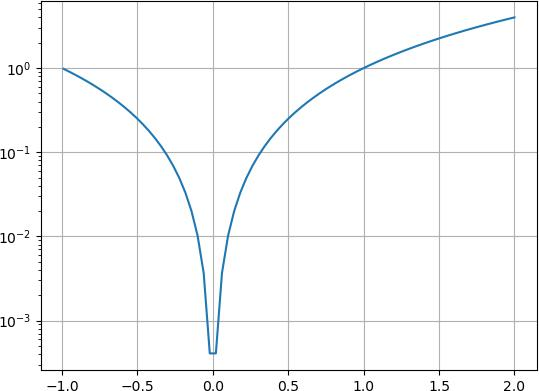
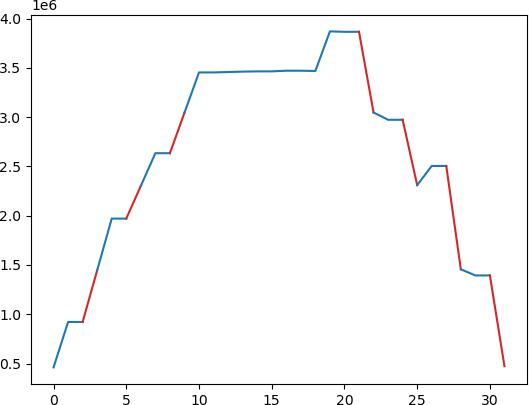
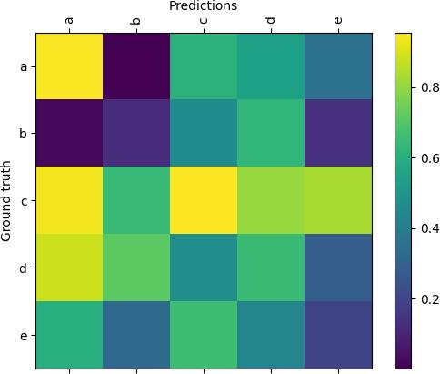

k1lib.viz module¶
-
class
k1lib.viz.SliceablePlot(plotF: Callable[[slice], None], slices: Union[slice, List[slice]] = slice(None, None, None), plotDecorators: List[k1lib.viz._PlotDecorator] = [], docs='')[source]¶ This is a plot that is “sliceable”, meaning you can focus into a particular region of the plot quickly. A minimal example looks something like this:
import numpy as np, matplotlib.pyplot as plt, k1lib x = np.linspace(-2, 2, 100) def normalF(): plt.plot(x, x**2) @k1lib.viz.SliceablePlot.decorate def plotF(_slice): plt.plot(x[_slice], (x**2)[_slice]) plotF()[70:] # plots x^2 equation with x in [0.8, 2]
So,
normalFplots the equation \(x^2\) with x going from -2 to 2. You can convert this into aSliceablePlotby adding a term of typesliceto the args, and decorate withdecorate(). Now, every time you slice theSliceablePlotwith a specific range,plotFwill receive it.How intuitive everything is depends on how you slice your data.
[70:]results in x in [0.8, 2] is rather unintuitive. You can change it into something like this:@k1lib.viz.SliceablePlot.decorate def niceF(_slice): n = 100; r = k1lib.Range(-2, 2) x = np.linspace(*r, n) _slice = r.toRange(k1lib.Range(n), r.bound(_slice)).slice_ plt.plot(x[_slice], (x**2)[_slice]) # this works without a decorator too btw: k1lib.viz.SliceablePlot(niceF) niceF()[0.3:0.7] # plots x^2 equation with x in [0.3, 0.7] niceF()[0.3:] # plots x^2 equation with x in [0.3, 2]
The idea is to just take the input
slice, put some bounds on its parts, then convert that slice from [-2, 2] to [0, 100]. Check outk1lib.Rangeif it’s not obvious how this works.A really cool feature of
SliceablePlotlooks like this:niceF().legend(["A"])[-1:].grid(True).yscale("log")
This will plot \(x^2\) with range in [-1, 2] with a nice grid, and with y axis’s scale set to log. Essentially, undefined method calls on a
SliceablePlotwill translate intopltcalls. So the above is roughly equivalent to this:x = np.linspace(-2, 2, 100) plt.plot(x, x**2) plt.legend(["A"]) plt.grid(True) plt.yscale("log")
This works even if you have multiple axes inside your figure. It’s wonderful, isn’t it?
-
k1lib.viz.plotSegments(x: List[float], y: List[float], states: List[int], colors: Optional[List[str]] = None)[source]¶ Plots a line graph, with multiple segments with different colors.
- Parameters
x – (nullable) list of x coordinate at each point
y – list of y coordinates at each point
states – list of color at each point
colors – string colors to display for each states
Idea is, you have a normal line graph, but you want to color parts of the graph red, other parts blue. Then, you can pass a “state” array, with the same length as your data, filled with ints, like this:
y = np.array([ 460800, 921600, 921600, 1445888, 1970176, 1970176, 2301952, 2633728, 2633728, 3043328, 3452928, 3452928, 3457024, 3461120, 3463680, 3463680, 3470336, 3470336, 3467776, 3869184, 3865088, 3865088, 3046400, 2972672, 2972672, 2309632, 2504192, 2504192, 1456128, 1393664, 1393664, 472576]) s = np.array([1, 0, 0, 1, 0, 0, 1, 0, 0, 1, 0, 0, 0, 0, 0, 0, 0, 0, 0, 0, 0, 0, 1, 0, 0, 1, 0, 0, 1, 0, 0, 1]) plotSegments(None, y, s, colors=["tab:blue", "tab:red"])
-
class
k1lib.viz.Carousel[source]¶ -
__init__()[source]¶ Creates a new Carousel. You can then add images and whatnot. Will even work even when you export the notebook as html. Example:
import numpy as np, matplotlib.pyplot as plt, k1lib c = k1lib.viz.Carousel() x = np.linspace(-2, 2); plt.plot(x, x ** 2); c.savePlt() x = np.linspace(-1, 3); plt.plot(x, x ** 2); c.savePlt() c # displays in notebook cell

-
saveBytes(_bytes: bytes, fmt: Optional[str] = None)[source]¶ Saves bytes as another image.
- Parameters
fmt – format of image
-
save(f: Callable[[_io.BytesIO], None])[source]¶ Generic image save function. Treat
io.BytesIOas if it’s a file when you’re doing this:with open("file.txt") as f: pass # "f" is similar to io.BytesIO
So, you can do stuff like:
import matplotlib.pyplot as plt, numpy as np x = np.linspace(-2, 2) plt.plot(x, x**2) c = k1lib.viz.Carousel() c.save(lambda io: plt.savefig(io, format="png"))
- Parameters
f – lambda that provides a
io.BytesIOfor you to write to
-
-
k1lib.viz.confusionMatrix(matrix: torch.Tensor, categories: Optional[List[str]] = None, **kwargs)[source]¶ Plots a confusion matrix. Example:
k1lib.viz.confusionMatrix(torch.rand(5, 5), ["a", "b", "c", "d", "e"])
- Parameters
matrix – 2d matrix of shape (n, n)
categories – list of string categories
kwargs – keyword args passed into
plt.figure()
-
k1lib.viz.FAnim(fig, f, frames, *args, **kwargs)[source]¶ Matplotlib function animation, 60fps. Example:
# line below so that the animation is displayed in the notebook. Included in :mod:`k1lib.imports` already, so you don't really have to do this! plt.rcParams["animation.html"] = "jshtml" x = np.linspace(-2, 2); y = x**2 fig, ax = plt.subplots() plt.close() # close cause it'll display 1 animation, 1 static if we don't do this def f(frame): ax.clear() ax.set_ylim(0, 4); ax.set_xlim(-2, 2) ax.plot(x[:frame], y[:frame]) k1lib.FAnim(fig, f, len(x)) # plays animation in cell
- Parameters
fig – figure object from plt.figure(…) command
f – function that accepts 1 frame from frames.
frames – number of frames, or iterator, to pass into function